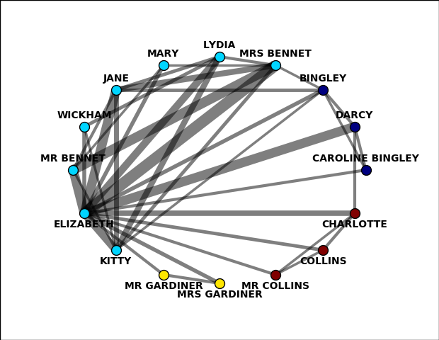
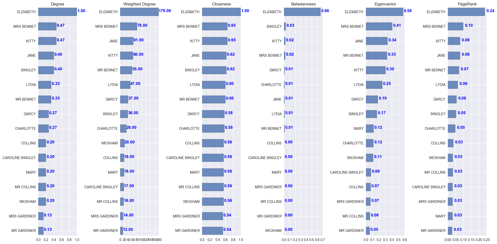

Pride and Prejudice
Character Network
Inspired by Network of Thrones
The character network includes interacting characters in at least 5 scenes.
- The thickness of links indicates the <>number of scenes between the linked nodes/characters. Thicker line means more scenes.
- The color of nodes indicates natural division of communities:
- Community 1: MR BENNET, MARY, JANE, WICKHAM, ELIZABETH, KITTY, MRS BENNET, LYDIA
- Community 2: COLLINS, MR COLLINS, CHARLOTTE
- Community 3: MRS GARDINER, MR GARDINER
- Community 4: BINGLEY, DARCY, CAROLINE BINGLEY
Additional Statistics:
- Connected Components : [16]
- Transitivity Ratio : 0.504 (0 = one character connected to others; 1 = all characters connected to each other)
- Local Clustering Coefficient : 0.806
- Density : 0.325 (0 = no links; 1 = all possible links)

Character Importance
We use different centrality measures to address characters' influence. Higher value means higher influence.

An explanation for the measures:
- Degree Centrality: the fraction of characters you interact with.
- Weighted Degree: the number of interactions you participate in.
- Eigenvector Centrality: weighted degree centrality with a feedback boost for interacting with other important characters. You get full credit for the importance of your neighbors.
- PageRank Centrality: weighted degree centrality with a feedback boost for interacting with other important characters. The importance of your neighbors is split among its neighbors.
- Closeness Centrality: how close you are to all other characters; it is the average shortest distance to all other characters (measured by number of links you traverse).
- Betweenness Centrality: how often you lie on shortest paths between two other characters, making you a broker of information.
It seems that the stadout character is ELIZABETH, who has the most scenes with:
- MRS BENNET 23
- MR BENNET 19
- JANE 19
- DARCY 19
- KITTY 16